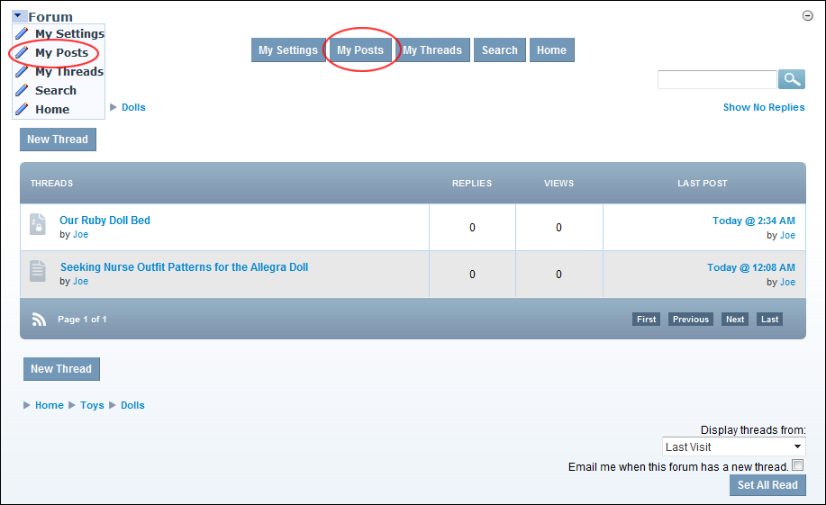

How a forum member can view all of their posts to the Forum module.

Viewing Your Posts
Tip: When viewing a thread, you can order it from Oldest To Newest or Newest To Oldest by selecting either option from the drop down list located in the bottom right corner of the page.